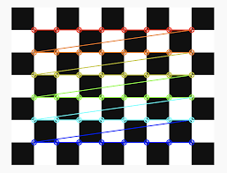

-
Real Time Driver Behaviour Detection
I designed a system that monitors driver attentiveness during operation, stepping in to aid focus as required. The development included algorithms for instantaneous detection of hazardous driving behaviors, triggering prompt alerts and feedback for improved safety measures. This system is designed to swiftly respond to distractions or lapses in concentration, providing timely assistance to enhance overall driving safety. By implementing real-time monitoring and intervention capabilities, the system aims to mitigate risks and promote responsible driving habits for increased road safety.
Skills used: Computer vision, OpenCV, PyTorch, Python.
-

Kinova Gen3 Camera Calibration
Performed camera calibration to determine intrinsic and extrinsic parameters for the Kinova Gen3 Ultralite 7 DOF robotic arm. Utilized ROS and OpenCV to capture and analyze calibration images, ensuring accurate object localization and manipulation for vision-based tasks.
Skills used: LLMs, OpenAI, Python, Streamlit, Huggingface.
-

New Covid Cases Prediction
Designed a model that could predict new covid cases using Gaussian Process Regressor.
Skills used: Machine learning, numpy, Scikit learn, Python.
Projects